소프트웨어 엔지니어가 운영체제를 깊이 있게 이해하고 고성능의 시스템 소프트웨어를 작성하기 위해서는, 그 토대가 되는 하드웨어 아키텍처(Computer Architecture)와 시스템 프로그래밍 환경에 대한 명확한 통찰이 선행되어야 합니다. 본 강의에서는 폰 노이먼 구조 기반의 물리적 하드웨어 상호작용 메커니즘부터 실제 C 프로그램이 기계어로 변환되는 툴체인(Toolchain) 파이프라인까지의 전 과정을 딥-테크(Deep-tech) 관점에서 심화 학습합니다.
현대의 범용 시스템은 프로그램 코드와 데이터가 메인 메모리에 디지털 형태로 적재되어 순차적으로 해석되는 내장형 프로그램 명령(Stored-program concept) 구조 즉, 폰 노이먼 아키텍처를 근간으로 합니다.
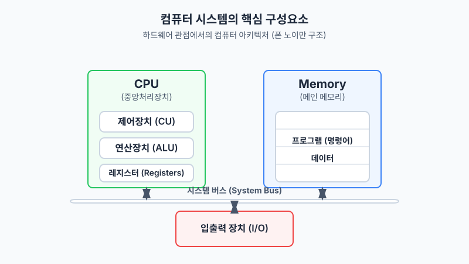
모든 디지털 연산의 두뇌 역할을 하는 CPU(중앙처리장치)는 고도로 집적화된 트랜지스터들의 조합으로, 논리적으로는 상태 다이어그램과 유한 상태 기계(FSM)를 구현하는 세 가지 핵심 모듈로 나뉩니다.
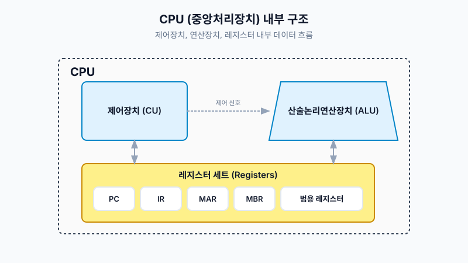
특히, 시스템 프로그램과 운영체제 루틴이 상호작용하기 위해서는 주요 레지스터의 용도를 정확히 파악해야 합니다.
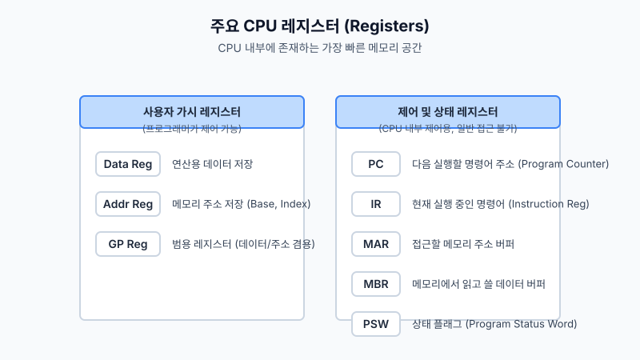
명령어가 존재하는 공간의 위치를 지정하는 PC(Program Counter), 인터럽트와 시스템 권한 모드(Kernel/User)를 관리하는 PSW(Program Status Word)는 차후 3강에서 다룰 프로세스 컨텍스트 스위칭의 가장 핵심적인 스냅샷 자원(Context)입니다.
독립된 각 하드웨어 모듈은 마더보드의 구리 배선인 시스템 버스(System Bus)를 통해 단일 논리망으로 결합됩니다.
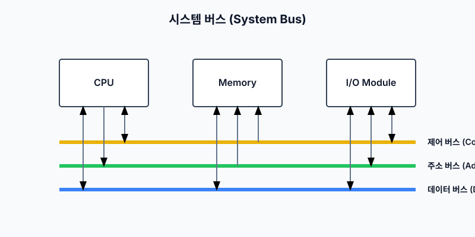
특히 시스템 버스에 물려 있는 저속의 입출력 모듈(I/O)은 고속의 CPU와의 임피던스(속도) 불일치를 해결해야 합니다. 초창기 운영체제 아키텍처는 I/O의 응답 제어 방식 최적화를 위해 발전해 왔습니다.
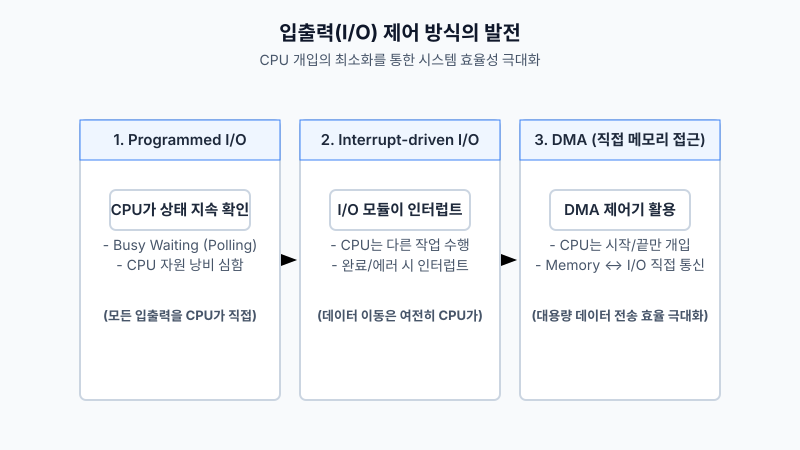
기존 Programmed I/O의 치명적 병목 현상(Busy Waiting)을 타파하기 위해, 하드웨어 소자가 주도권을 쥐는 인터럽트(Interrupt)가 도입되었고, 메모리와 외부 장치 간 데이터를 다이렉트로 전송하여 CPU의 개입을 시작과 종료 시점 에만 제한하는 DMA(Direct Memory Access) 메커니즘은 현대 SSD와 고대역폭 네트워크 인프라의 근간이 되었습니다.
CPU의 클럭 속도는 기하급수적으로 빨라진 반면, DRAM 기술 기반의 메인 메모리 레이턴시는 이를 쫓아가지 못해 발생하는 폰 노이먼 병목(Von Neumann Bottleneck)을 해결하기 위해, 현대 아키텍처는 메모리 계층 구조(Memory Hierarchy)를 필수적으로 도입했습니다.
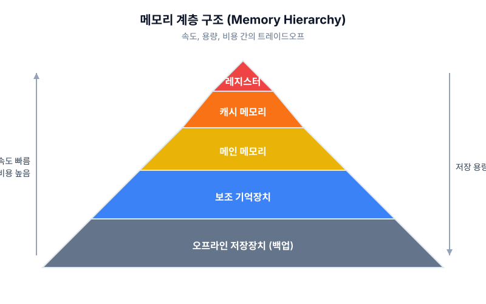
고속이지만 비트(Bit)당 단가가 매우 높은 SRAM 컴포넌트는 캐시 메모리에 탑재되고, 상대적으로 느리며 높은 집적도를 가진 DRAM은 메인 메모리 영역에 탑재됩니다. 이 구조의 효율성은 지역성의 원리(Principle of Locality)에 의해 극대화됩니다.
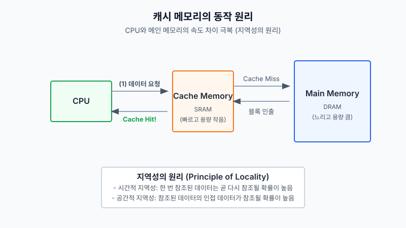
과거 한 번 참조된 데이터가 곧 다시 등장할 확률이 높다는 시간적(Temporal) 지역성과, 참조된 데이터 근처에 위치한 메모리 슬롯이 참조될 확률이 높다는 공간적(Spatial) 지역성은 캐시 히트율(Cache Hit Rate)을 90% 이상 유지하게 해주는 통계적 알고리즘의 바탕이 됩니다.
소프트웨어가 동작하기 위한 최소 단위 실행 명령은 코어 트랜지스터가 해독할 수 있는 일정한 바이너리 포맷을 가져야 합니다.
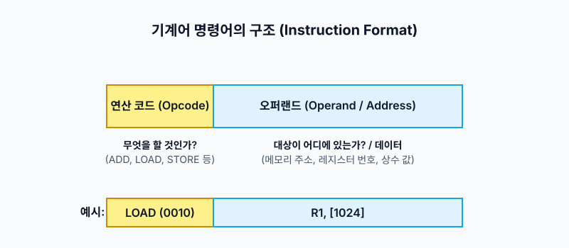
모든 x86이나 ARM 바이너리는 연산 작업(Opcode)과 메모리나 레지스터의 타겟 주소(Operand)가 포장 배열된 형태의 구조체를 따릅니다. 이를 실제 CPU가 작동시키는 매커니즘을 명령어 사이클(Instruction Cycle)이라 합니다.
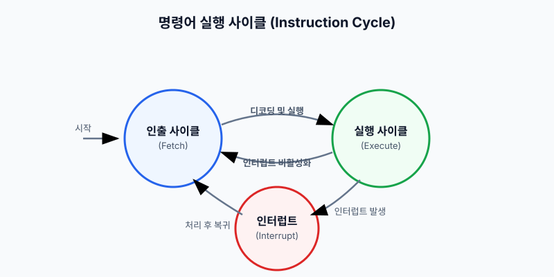
이 사이클 중, 가장 기초가 되는 행위는 메인 메모리 혹은 캐시에서 CPU 내부 공간으로 해당 명령어를 끌고 오는 인출(Fetch) 사이클이며, 이는 세 단계의 나노 스케일 마이크로 연산(Micro-operation)으로 전개됩니다.
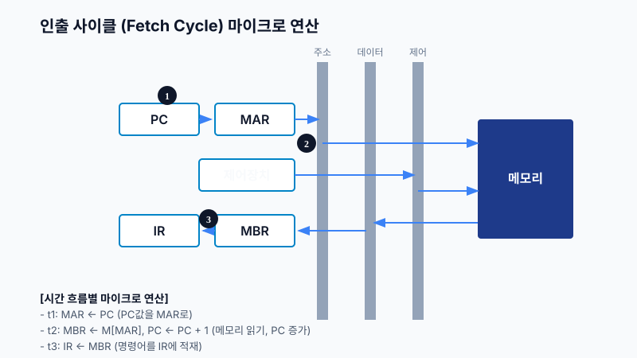
시간 t1에서 PC 값을 주소 레지스터(MAR)로 옮기고, t2에서 메모리를 읽어 MBR에 실어오며 프로그램 논리를 위로 스텝(PC++)시킵니다. 이후 t3에서 연산을 위해 인터널 레지스터인 IR로 최종 이관합니다.
현대 프로세서(특히 ARM을 필두로 한 스마트 디바이스 아키텍처)의 핵심 코어 설계 사상은 단순하고 직관적인 명령어 집합인 RISC 아키텍처의 파이프라이닝(Pipelining) 성능입니다.
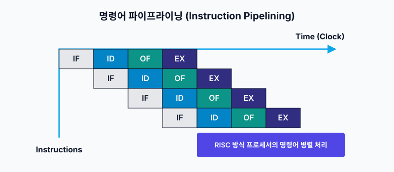
RISC 명령어의 가장 큰 장점은 다단계 파이프라이닝 최적화입니다. 인출(IF), 디코드(ID), 실행(EX), 결과 쓰기(WB/OF) 등의 스텝을 시간 축으로 병렬 오버랩 처리함으로써, 1 클럭-사이클 당 1 명령어 처리가 가능한 슈퍼스칼라(Superscalar) 성능을 구현할 수 있습니다.
소프트웨어 시스템에서 비동기적 이벤트를 가장 효과적으로 제어하는 요소가 바로 인터럽트입니다. 이는 단순한 속도차 극복을 넘어서 프로세스와 운영체제 간의 컨텍스트를 스위칭하는 본질적인 계측 장치입니다.
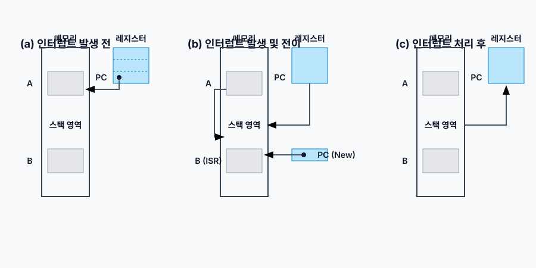
마이크로프로세서는 현재 프로그램 A를 동작시키는 도중 인터럽트 시그널 핀(Signal pin)을 탐지하면 즉각적으로 하드웨어 스택(Stack) 메모리 공간에 현재의 PC 값과 레지스터 스냅샷을 푸시(Push)합니다. 이후 인터럽트 핸들러 함수(ISR) 주소로 PC를 점프하게 시킨 뒤 해당 루틴이 끝나면 스택에서 주소를 팝(Pop)하여 중단되었던 프로그램 A의 정확한 위치로 복귀하게 됩니다.
시스템 커널 개발, 드라이버 제작 및 엔지니어링 수준의 프로그래밍을 위해서는 쉘 기반의 스탠다드 환경을 숙달해야 합니다. vi(VIM) 에디터는 모드 전환이라는 철학으로 단축키 조합을 통한 개발 생산성 극대화를 추구합니다.
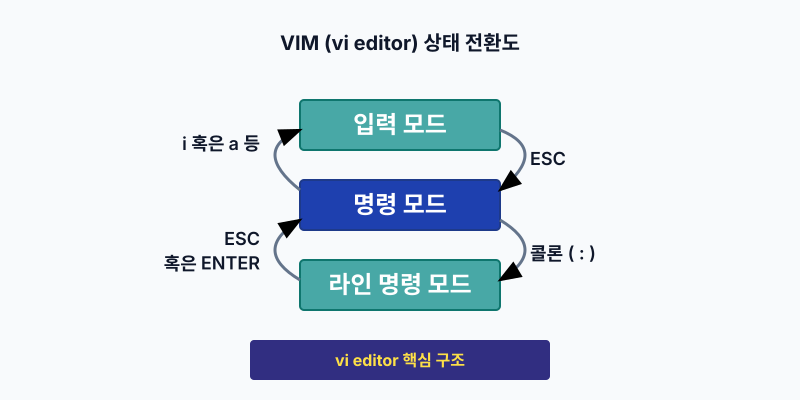
이렇게 작성된 C/C++ 소스 코드는 우리가 알고리즘 로직을 기재한 것일 뿐, 프로세서가 인식하려면 로우-레벨(Low-level) 기계어 바이너리로 번역되어야 합니다. 리눅스의 표준 컴파일러인 GCC (GNU Compiler Collection)는 크게 4개의 고유한 파이프라인 단계로 빌드를 수행합니다.
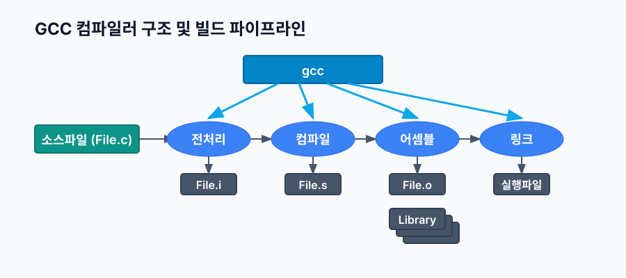
단순해 보이는 gcc -o output source.c 명령의 내부는 다음과 같이 모듈화되어 철저한 분업을 진행합니다.
전처리 단계 (Preprocess)
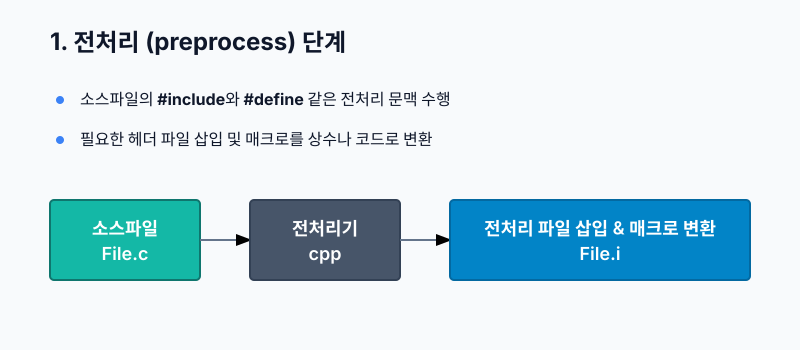
cpp (C Preprocessor)가 동작합니다. 소스코드 내의 모든 #define 매크로들을 인라인 치환하고, #include 지시어를 추적해 헤더 파일 원문을 모두 복사-붙여넣기 형태로 삽입하여 무거운 .i 중간 소스를 생성합니다.
컴파일 단계 (Compile)
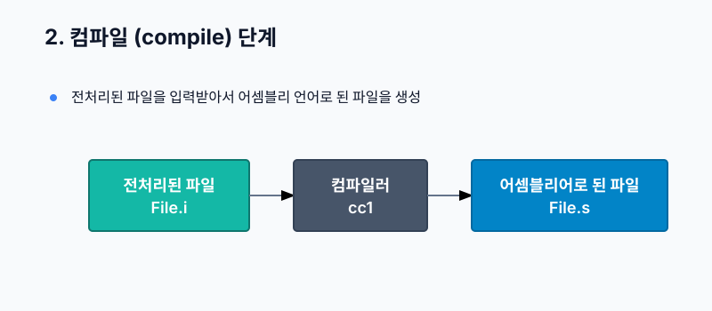
사실상의 컴파일러 코어인cc1이 동작합니다. 이 C 언어 코드를 파싱하고 최적화하여 저수준의 아키텍처 특화 언어인 어셈블리어(Assembly) 형태의 .s 텍스트 화일을 뽑아냅니다. 문법적 에러는 오직 이 단계에서 색출됩니다.
어셈블 단계 (Assemble)
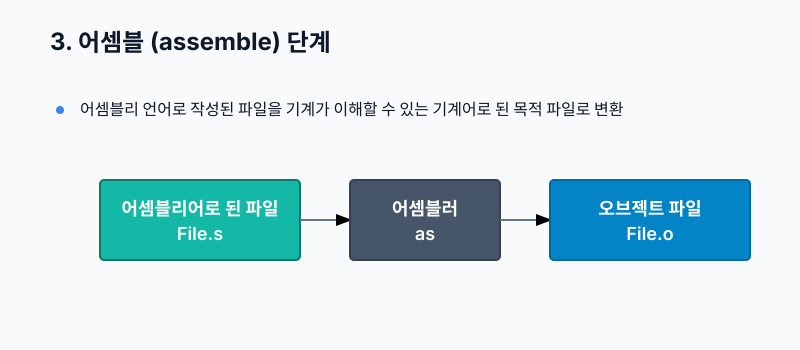
하드웨어 어셈블러as가 동작합니다. Mnemonic(니모닉) 단위의 어셈블리어 코드를 0과 1로 포맷팅된 실제 이진 기계어(Machine code)로 인코딩하여 재배치 가능한 오브젝트 화일(Object File, .o)를 만들어 냅니다.
링크 단계 (Link)
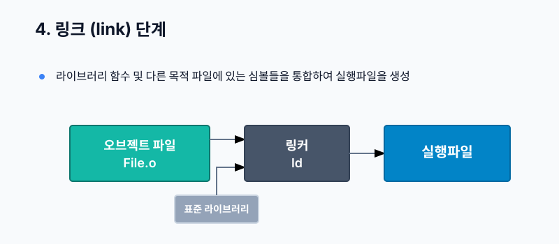
시스템 링커ld가 동작합니다. 코드에서 호출한 리눅스 표준 커널 C 라이브러리(libc 등)의 오브젝트 코드와 사용자가 만든 여러 .o 파일들을 주소 체계에 맞춰 정적으로 연결 및 병합함으로써, 최종적으로 운영체제 안에서 구동되는 단일 실행 바이너리(Executable) 포맷(보통 리눅스상 ELF)을 렌더링합니다.
📚 참고문헌
- David A. Patterson, John L. Hennessy, 『Computer Organization and Design ARM Edition』, Morgan Kaufmann.
- 구현회, 『운영체제 - 그림으로 배우는 구조와 원리』, 한빛아카데미, 2016.
- GNU Compiler Collection (GCC) Internals Documentation.